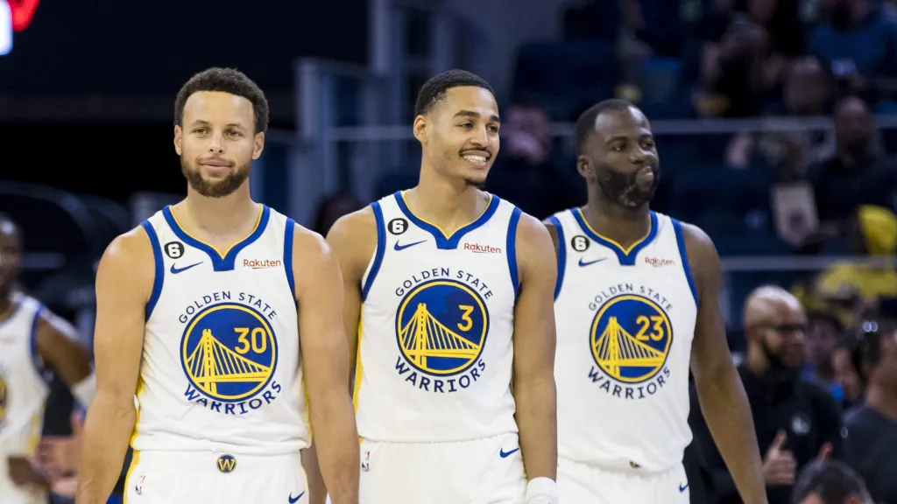

Csapat:
| Név | Pozíció | Születési Dátum | Nemzetiség |
|---|
Háttér:
A Golden State Warriors amerikai profi kosárlabdacsapat, amely az National Basketball Association-ben játszik. Székhelyük a kaliforniai
San Francisco. A Warriors a nyugati főcsoportban szerepel, a csendes-óceáni csoportban. 1946-ban alapították Philadelphiában, a Warriors 1962-ben a San Francisco
Bay Area-ba költözött és felvették a város nevét, mielőtt 1971-ben a Golden State névre változtatták volna. Hazai mérkőzéseiket a Chase Centerben játsszák.
A Warriors nyerte a Basketball Association of America első bajnoki címét 1947-ben, majd ismét győztesek lettek 1956-ben, Paul Arizin, Tom Gola és Neil Johnston vezetésével. Miután 1965 januárjában Wilt Chamberlaint Philadelphiába küldték, a csapat az 1964–1965-ös szezont az NBA legrosszabb csapataként zárta, mindössze 17 győzelemmel. Az újjáépítési időszakuk nagyon rövid volt, főleg Rick Barry draftolásának köszönhetően. 1975-ben Barry és Jamaal Wilkes vezetésével a Warriors elnyerte harmadik bajnoki címét, ami az egyik legnagyobb meglepetés volt az NBA történetében.
A Warriors nyerte a Basketball Association of America első bajnoki címét 1947-ben, majd ismét győztesek lettek 1956-ben, Paul Arizin, Tom Gola és Neil Johnston vezetésével. Miután 1965 januárjában Wilt Chamberlaint Philadelphiába küldték, a csapat az 1964–1965-ös szezont az NBA legrosszabb csapataként zárta, mindössze 17 győzelemmel. Az újjáépítési időszakuk nagyon rövid volt, főleg Rick Barry draftolásának köszönhetően. 1975-ben Barry és Jamaal Wilkes vezetésével a Warriors elnyerte harmadik bajnoki címét, ami az egyik legnagyobb meglepetés volt az NBA történetében.
Több információkért lásd: https://hu.wikipedia.org/wiki/Golden_State_Warriors
Top 10 csapat az NBA-ban történelmében:
- 1995-96 Chicago Bulls
- 2016-17 Golden State Warriors
- 1971-72 Los Angeles Lakers
- 1970-71 Milwaukee Bucks
- 1985-86 Boston Celtics
- 1990-91 Chicago Bulls
- 1986-87 Los Angeles Lakers
- 2000-01 Los Angeles Lakers
- 1982-83 Philadelphia 76ers
- 2012-13 Miami Heat
Galéria:

×